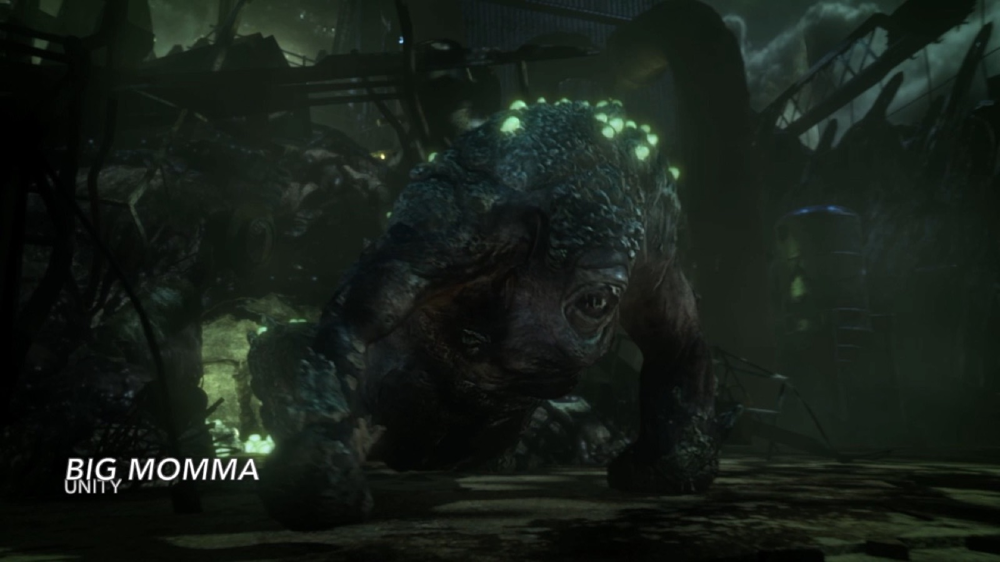

Project / 001
Demo Reel
2025
- Year
- 2025
- Category
- Audiovisual
- Location
- To be added
Concept
A survey in moving image and sound.
This 2025 demo reel brings together selected audiovisual work by Carolyne Liang, moving across composition, sound design, and moving image. Edited as a continuous sequence, it foregrounds the relationships between sonic gesture, visual rhythm, texture, and space.
Rather than presenting each work as an isolated excerpt, the reel traces recurring concerns across the practice: how sound can organize attention, shape an atmosphere, and alter the way an image is perceived over time.
Documentation / 01

Technical / Credits
- Format
- Digital video with sound
- Duration
- To be added
- Credits
- To be added